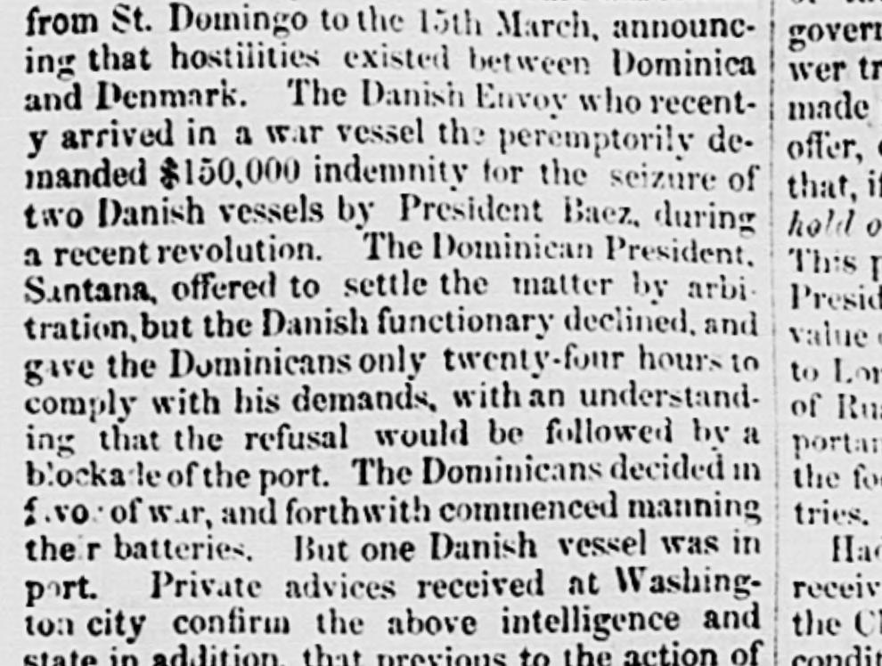
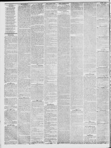

Santana, offered to settle the matter by arbi tralion.but the DanishSantana se ofreció a resolver el asunto mediante arbitraje, pero los daneses
Richmond Enquirer. Richmond, Va., April 8, 1859. Page 4. View the originalVer el original


See the full pageVer la página completaThe Richmond Enquirer reported that Dominican President Santana offered arbitration regarding indemnity for the seizure of two Danish vessels, but the Danish functionary declined, threatened a blockade within twenty-four hours, and prompted the Dominicans to prepare for war. Additionally, private advices from Washington stated that the French commander had previously demanded the concession of all Dominican gold, silver, copper, and coal mines, and that Santana might dispatch a commissioner to the United States to grant privateer commissions.El Richmond Enquirer informó que el presidente dominicano Santana ofreció someter a arbitraje la indemnización por la incautación de dos buques daneses, pero el funcionario danés declinó, amenazó con un bloqueo en un plazo de veinticuatro horas y provocó que los dominicanos se prepararan para la guerra. Además, informes privados procedentes de Washington señalaban que el comandante francés había exigido con anterioridad la concesión de todas las minas dominicanas de oro, plata, cobre y carbón, y que Santana podría despachar a un comisionado a los Estados Unidos para otorgar patentes de corso.
FULL TEXT:TEXTO COMPLETO:
from St. Domingo to the 15th March, announcing that hostilities existed between Dominica and Denmark. The Danish Envoy who recently arrived in a war vessel then peremptorily demanded $150,000 indemnity for the seizure of two Danish vessels by President Baez, during a recent revolution. The Dominican President, Santana, offered to settle the matter by arbitration, but the Danish functionary declined, and gave the Dominicans only twenty-four hours to comply with his demands, with an understanding that the refusal would be followed by a blockade of the port. The Dominicans decided in favor of war, and forthwith commenced manning their batteries. But one Danish vessel was in port. Private advices received at Washington city confirm the above intelligence and state in addition, that previous to the action ofde Santo Domingo hasta el 15 de marzo, anunciando que existían hostilidades entre Dominica y Dinamarca. El Enviado Danés que recientemente llegó en un buque de guerra entonces demandó perentoriamente $150,000 de indemnización por la captura de dos buques daneses por el Presidente Báez, durante una revolución reciente. El Presidente Dominicano, Santana, ofreció arreglar el asunto por arbitraje, pero el funcionario danés declinó, y dio a los dominicanos solo veinticuatro horas para cumplir con sus demandas, con un entendimiento de que la negativa sería seguida por un bloqueo del puerto. Los dominicanos decidieron a favor de la guerra, e inmediatamente comenzaron a tripular sus baterías. Pero un buque danés estaba en puerto. Avisos privados recibidos en la ciudad de Washington confirman la inteligencia anterior y declaran además, que previo a la acción de